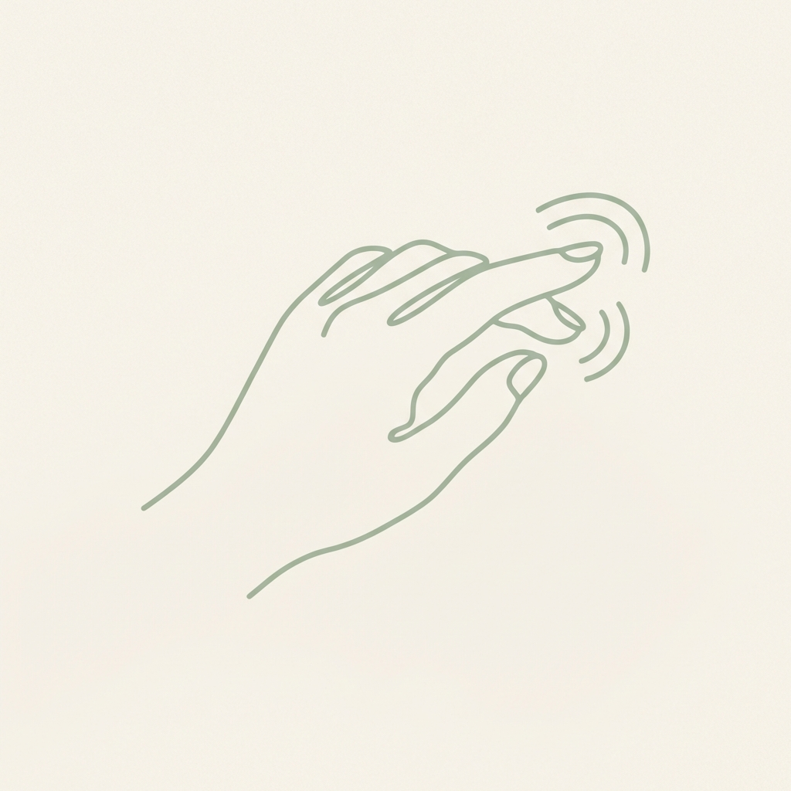

Insight is the Beginning. Integration is the Goal.
Moving shadow work out of your head and into your body.
A 200+ page digital somatic journey to move trauma out of your thoughts and through your body.
Get the Digital Workbook
The Action Gap
The Flashlight
Traditional Journals
Focused on excavation. Leads to rumination and "mental loops".
The Renovation Crew
This Workbook
Focused on somatic integration. Converts insight into "Ethical Obligation" through micro-actions.
We don't dig without a safety net.
Learn to regulate before you excavate.
Nervous System Regulation

EFT Tapping
Safety Anchors
Body-Based Integration
Hover over the body to explore which pages address each somatic center.

The Throat: Speaking Your Truth (Page 74)
The Heart: Grief & Letting Go (Page 58)
The Gut: Self-Sabotage Integration (Page 42)
Chapter Preview: The Journey to Integration